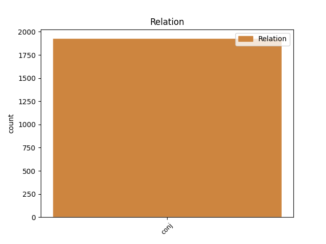
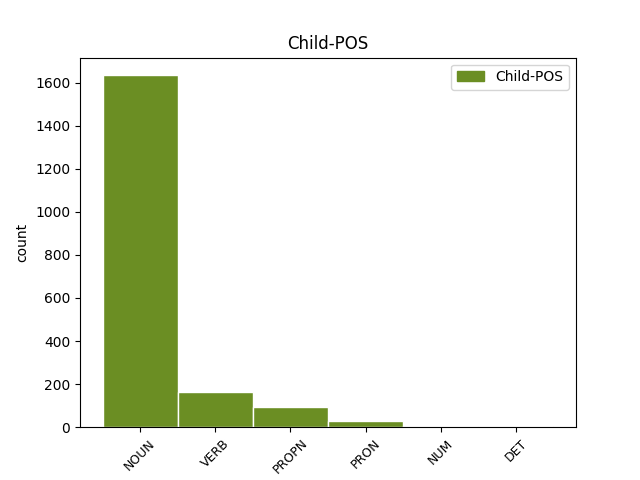

Distribution of features within this leaf



Agreement Rules sorted by frequency.
- When the dependent token is the conjunct(conj) of the head token, and the head token is NOUN and the dependent token is NOUN.
1 VII _ _ _ _ 0 _ _ _
2 . _ _ _ _ 0 _ _ _
3 KOMITETO _ _ _ _ 0 _ _ _
4 VEIKLOS _ _ _ _ 0 _ _ _
5 KONTROLĖ kontrolė NOUN dkt.mot.vns.V. Case=Nom|Gender=Fem|Number=Sing 0 _ _ _
6 IR _ _ _ _ 0 _ _ _
7 ATSAKOMYBĖ atsakomybė NOUN dkt.mot.vns.V. Case=Nom|Gender=Fem|Number=Sing 5 conj _ _
1 Protokole _ _ _ _ 0 _ _ _
2 turi _ _ _ _ 0 _ _ _
3 būti _ _ _ _ 0 _ _ _
4 nurodyta _ _ _ _ 0 _ _ _
5 data _ _ _ _ 0 _ _ _
6 , _ _ _ _ 0 _ _ _
7 protokolo _ _ _ _ 0 _ _ _
8 registravimo _ _ _ _ 0 _ _ _
9 numeris _ _ _ _ 0 _ _ _
10 , _ _ _ _ 0 _ _ _
11 Komiteto _ _ _ _ 0 _ _ _
12 posėdžio _ _ _ _ 0 _ _ _
13 dalyviai _ _ _ _ 0 _ _ _
14 , _ _ _ _ 0 _ _ _
15 svarstyti _ _ _ _ 0 _ _ _
16 klausimai _ _ _ _ 0 _ _ _
17 , _ _ _ _ 0 _ _ _
18 kalbėję kalbėti VERB vksm.dlv.veik.būt-k.vyr.dgs.V. Aspect=Perf|Case=Nom|Definite=Ind|Gender=Masc|Number=Plur|Polarity=Pos|Tense=Past|VerbForm=Part|Voice=Act 0 _ _ _
19 bei _ _ _ _ 0 _ _ _
20 klausimus _ _ _ _ 0 _ _ _
21 pateikę pateikti VERB vksm.dlv.veik.būt-k.vyr.dgs.V. Aspect=Perf|Case=Nom|Definite=Ind|Gender=Masc|Number=Plur|Polarity=Pos|Tense=Past|VerbForm=Part|Voice=Act 18 conj _ _
22 asmenys _ _ _ _ 0 _ _ _
23 , _ _ _ _ 0 _ _ _
24 balsavimo _ _ _ _ 0 _ _ _
25 rezultatai _ _ _ _ 0 _ _ _
26 ir _ _ _ _ 0 _ _ _
27 priimti _ _ _ _ 0 _ _ _
28 sprendimai _ _ _ _ 0 _ _ _
29 . _ _ _ _ 0 _ _ _
1 Liepos _ _ _ _ 0 _ _ _
2 mėn _ _ _ _ 0 _ _ _
3 . _ _ _ _ 0 _ _ _
4 Šengeno _ _ _ _ 0 _ _ _
5 jungtinės _ _ _ _ 0 _ _ _
6 priežiūros _ _ _ _ 0 _ _ _
7 institucijos _ _ _ _ 0 _ _ _
8 kvietimu _ _ _ _ 0 _ _ _
9 Inspekcijos _ _ _ _ 0 _ _ _
10 atstovas _ _ _ _ 0 _ _ _
11 dalyvavo _ _ _ _ 0 _ _ _
12 Maltos Malta PROPN dkt.tikr.mot.vns.K. Case=Gen|Gender=Fem|Number=Sing 0 _ _ _
13 ir _ _ _ _ 0 _ _ _
14 Kipro Kipras PROPN dkt.tikr.vyr.vns.K. Case=Gen|Gender=Masc|Number=Sing 12 conj _ _
15 Šengeno _ _ _ _ 0 _ _ _
16 vertinime _ _ _ _ 0 _ _ _
17 . _ _ _ _ 0 _ _ _
1 13 _ _ _ _ 0 _ _ _
2 . _ _ _ _ 0 _ _ _
3 Į _ _ _ _ 0 _ _ _
4 Komiteto _ _ _ _ 0 _ _ _
5 posėdžius _ _ _ _ 0 _ _ _
6 gali _ _ _ _ 0 _ _ _
7 būti _ _ _ _ 0 _ _ _
8 kviečiami _ _ _ _ 0 _ _ _
9 Aplinkos _ _ _ _ 0 _ _ _
10 ministerijos _ _ _ _ 0 _ _ _
11 , _ _ _ _ 0 _ _ _
12 jai _ _ _ _ 0 _ _ _
13 pavaldžių pavaldus ADJ bdv.nelygin.mot.dgs.K. Case=Gen|Definite=Ind|Degree=Pos|Gender=Fem|Number=Plur 0 _ _ _
14 ar _ _ _ _ 0 _ _ _
15 jos _ _ _ _ 0 _ _ _
16 reguliavimo _ _ _ _ 0 _ _ _
17 sričiai _ _ _ _ 0 _ _ _
18 priskirtų priskirti VERB vksm.dlv.neveik.būt.mot.dgs.K. Case=Gen|Definite=Ind|Gender=Fem|Number=Plur|Polarity=Pos|Tense=Past|VerbForm=Part|Voice=Pass 13 conj _ _
19 institucijų _ _ _ _ 0 _ _ _
20 ir _ _ _ _ 0 _ _ _
21 organizacijų _ _ _ _ 0 _ _ _
22 specialistai _ _ _ _ 0 _ _ _
23 , _ _ _ _ 0 _ _ _
24 kitų _ _ _ _ 0 _ _ _
25 valstybės _ _ _ _ 0 _ _ _
26 ir _ _ _ _ 0 _ _ _
27 vietos _ _ _ _ 0 _ _ _
28 savivaldos _ _ _ _ 0 _ _ _
29 institucijų _ _ _ _ 0 _ _ _
30 pareigūnai _ _ _ _ 0 _ _ _
31 , _ _ _ _ 0 _ _ _
32 nepriklausomi _ _ _ _ 0 _ _ _
33 ekspertai _ _ _ _ 0 _ _ _
34 , _ _ _ _ 0 _ _ _
35 visuomeninių _ _ _ _ 0 _ _ _
36 ir _ _ _ _ 0 _ _ _
37 nevyriausybinių _ _ _ _ 0 _ _ _
38 organizacijų _ _ _ _ 0 _ _ _
39 atstovai _ _ _ _ 0 _ _ _
40 . _ _ _ _ 0 _ _ _
1 Inspekcijos _ _ _ _ 0 _ _ _
2 atstovai _ _ _ _ 0 _ _ _
3 tęsia _ _ _ _ 0 _ _ _
4 veiklą _ _ _ _ 0 _ _ _
5 Šengeno Šengenas PROPN dkt.tikr.vyr.vns.K. Case=Gen|Gender=Masc|Number=Sing 0 _ _ _
6 , _ _ _ _ 0 _ _ _
7 Europolo _ _ _ _ 0 _ _ _
8 ir _ _ _ _ 0 _ _ _
9 Muitinės _ _ _ _ 0 _ _ _
10 jungtinių _ _ _ _ 0 _ _ _
11 priežiūros _ _ _ _ 0 _ _ _
12 institucijų institucija NOUN dkt.mot.dgs.K. Case=Gen|Gender=Fem|Number=Plur 5 conj _ SpaceAfter=No
13 , _ _ _ _ 0 _ _ _
14 Direktyvos _ _ _ _ 0 _ _ _
15 95 46 _ _ _ _ 0 _ _ _
16 EB _ _ _ _ 0 _ _ _
17 29 _ _ _ _ 0 _ _ _
18 str _ _ _ _ 0 _ _ _
19 . _ _ _ _ 0 _ _ _
20 darbo _ _ _ _ 0 _ _ _
21 grupės _ _ _ _ 0 _ _ _
22 , _ _ _ _ 0 _ _ _
23 Konvencijos _ _ _ _ 0 _ _ _
24 ETS _ _ _ _ 0 _ _ _
25 Nr _ _ _ _ 0 _ _ _
26 . _ _ _ _ 0 _ _ _
27 108 _ _ _ _ 0 _ _ _
28 Patariamojo _ _ _ _ 0 _ _ _
29 komiteto _ _ _ _ 0 _ _ _
30 biuro _ _ _ _ 0 _ _ _
31 , _ _ _ _ 0 _ _ _
32 Tarptautinės _ _ _ _ 0 _ _ _
33 darbo _ _ _ _ 0 _ _ _
34 grupės _ _ _ _ 0 _ _ _
35 dėl _ _ _ _ 0 _ _ _
36 duomenų _ _ _ _ 0 _ _ _
37 apsaugos _ _ _ _ 0 _ _ _
38 telekomunikacijose _ _ _ _ 0 _ _ _
39 veikloje _ _ _ _ 0 _ _ _
40 , _ _ _ _ 0 _ _ _
41 dalyvauja _ _ _ _ 0 _ _ _
42 kituose _ _ _ _ 0 _ _ _
43 tarptautiniuose _ _ _ _ 0 _ _ _
44 renginiuose _ _ _ _ 0 _ _ _
45 ir _ _ _ _ 0 _ _ _
46 konferencijose _ _ _ _ 0 _ _ _
47 . _ _ _ _ 0 _ _ _
1 7 _ _ _ _ 0 _ _ _
2 . _ _ _ _ 0 _ _ _
3 Partnerinės _ _ _ _ 0 _ _ _
4 įmonės _ _ _ _ 0 _ _ _
5 – _ _ _ _ 0 _ _ _
6 įmonės _ _ _ _ 0 _ _ _
7 , _ _ _ _ 0 _ _ _
8 pagal _ _ _ _ 0 _ _ _
9 šį _ _ _ _ 0 _ _ _
10 įstatymą _ _ _ _ 0 _ _ _
11 nepriskiriamos _ _ _ _ 0 _ _ _
12 susijusioms _ _ _ _ 0 _ _ _
13 įmonėms _ _ _ _ 0 _ _ _
14 ir _ _ _ _ 0 _ _ _
15 tiesiogiai _ _ _ _ 0 _ _ _
16 ar _ _ _ _ 0 _ _ _
17 netiesiogiai _ _ _ _ 0 _ _ _
18 ( _ _ _ _ 0 _ _ _
19 per _ _ _ _ 0 _ _ _
20 vieną vienas PRON įv.mot.vns.G. Case=Acc|Definite=Ind|Gender=Fem|Number=Sing|PronType=Ind 0 _ _ _
21 ar _ _ _ _ 0 _ _ _
22 kelias keli PRON įv.mot.G. Case=Acc|Definite=Ind|Gender=Fem|PronType=Ind 20 conj _ _
23 susijusias _ _ _ _ 0 _ _ _
24 įmones _ _ _ _ 0 _ _ _
25 ) _ _ _ _ 0 _ _ _
26 turinčios _ _ _ _ 0 _ _ _
27 nuo _ _ _ _ 0 _ _ _
28 25 _ _ _ _ 0 _ _ _
29 iki _ _ _ _ 0 _ _ _
30 50 _ _ _ _ 0 _ _ _
31 procentų _ _ _ _ 0 _ _ _
32 kitos _ _ _ _ 0 _ _ _
33 įmonės _ _ _ _ 0 _ _ _
34 akcijų _ _ _ _ 0 _ _ _
35 , _ _ _ _ 0 _ _ _
36 pajų _ _ _ _ 0 _ _ _
37 ar _ _ _ _ 0 _ _ _
38 kitokių _ _ _ _ 0 _ _ _
39 dalyvavimą _ _ _ _ 0 _ _ _
40 įmonės _ _ _ _ 0 _ _ _
41 kapitale _ _ _ _ 0 _ _ _
42 žyminčių _ _ _ _ 0 _ _ _
43 kapitalo _ _ _ _ 0 _ _ _
44 dalių _ _ _ _ 0 _ _ _
45 arba _ _ _ _ 0 _ _ _
46 tiesiogiai _ _ _ _ 0 _ _ _
47 ar _ _ _ _ 0 _ _ _
48 netiesiogiai _ _ _ _ 0 _ _ _
49 ( _ _ _ _ 0 _ _ _
50 pagal _ _ _ _ 0 _ _ _
51 balsavimo _ _ _ _ 0 _ _ _
52 sutartį _ _ _ _ 0 _ _ _
53 , _ _ _ _ 0 _ _ _
54 balsavimo _ _ _ _ 0 _ _ _
55 teisės _ _ _ _ 0 _ _ _
56 perleidimo _ _ _ _ 0 _ _ _
57 sutartį _ _ _ _ 0 _ _ _
58 , _ _ _ _ 0 _ _ _
59 įgaliojimą _ _ _ _ 0 _ _ _
60 ir _ _ _ _ 0 _ _ _
61 pan _ _ _ _ 0 _ _ _
62 . _ _ _ _ 0 _ _ _
63 ) _ _ _ _ 0 _ _ _
64 turinčios _ _ _ _ 0 _ _ _
65 nuo _ _ _ _ 0 _ _ _
66 25 _ _ _ _ 0 _ _ _
67 iki _ _ _ _ 0 _ _ _
68 50 _ _ _ _ 0 _ _ _
69 procentų _ _ _ _ 0 _ _ _
70 visų _ _ _ _ 0 _ _ _
71 kitos _ _ _ _ 0 _ _ _
72 įmonės _ _ _ _ 0 _ _ _
73 dalyvių _ _ _ _ 0 _ _ _
74 balsų _ _ _ _ 0 _ _ _
75 . _ _ _ _ 0 _ _ _
1 Pavyzdžiui _ _ _ _ 0 _ _ _
2 , _ _ _ _ 0 _ _ _
3 autorė _ _ _ _ 0 _ _ _
4 pastebi _ _ _ _ 0 _ _ _
5 , _ _ _ _ 0 _ _ _
6 kad _ _ _ _ 0 _ _ _
7 Vakaruose vakarai NOUN dkt.vyr.dgs.Vt. Case=Loc|Gender=Masc|Number=Plur 0 _ _ _
8 ir _ _ _ _ 0 _ _ _
9 Rytų _ _ _ _ 0 _ _ _
10 Europoje Europa PROPN dkt.tikr.mot.vns.Vt. Case=Loc|Gender=Fem|Number=Sing 7 conj _ _
11 skirtingai _ _ _ _ 0 _ _ _
12 suvokiamas _ _ _ _ 0 _ _ _
13 subjektyvumas _ _ _ _ 0 _ _ _
14 : _ _ _ _ 0 _ _ _
15 „ _ _ _ _ 0 _ _ _
16 Vakaruose _ _ _ _ 0 _ _ _
17 jis _ _ _ _ 0 _ _ _
18 suvokiamas _ _ _ _ 0 _ _ _
19 kaip _ _ _ _ 0 _ _ _
20 vertinimas _ _ _ _ 0 _ _ _
21 , _ _ _ _ 0 _ _ _
22 komentavimas _ _ _ _ 0 _ _ _
23 , _ _ _ _ 0 _ _ _
24 o _ _ _ _ 0 _ _ _
25 Rytuose _ _ _ _ 0 _ _ _
26 – _ _ _ _ 0 _ _ _
27 kaip _ _ _ _ 0 _ _ _
28 informacijos _ _ _ _ 0 _ _ _
29 beletrizacija _ _ _ _ 0 _ _ _
30 arba _ _ _ _ 0 _ _ _
31 publicistika _ _ _ _ 0 _ _ _
32 , _ _ _ _ 0 _ _ _
33 taigi _ _ _ _ 0 _ _ _
34 čia _ _ _ _ 0 _ _ _
35 subjektyvumas _ _ _ _ 0 _ _ _
36 tapatinamas _ _ _ _ 0 _ _ _
37 ne _ _ _ _ 0 _ _ _
38 tiek _ _ _ _ 0 _ _ _
39 su _ _ _ _ 0 _ _ _
40 asmens _ _ _ _ 0 _ _ _
41 , _ _ _ _ 0 _ _ _
42 kiek _ _ _ _ 0 _ _ _
43 su _ _ _ _ 0 _ _ _
44 ištiso _ _ _ _ 0 _ _ _
45 publicistikos _ _ _ _ 0 _ _ _
46 funkcinio _ _ _ _ 0 _ _ _
47 stiliaus _ _ _ _ 0 _ _ _
48 samprata _ _ _ _ 0 _ _ _
49 “ _ _ _ _ 0 _ _ _
50 ( _ _ _ _ 0 _ _ _
51 p _ _ _ _ 0 _ _ _
52 . _ _ _ _ 0 _ _ _
53 71 _ _ _ _ 0 _ _ _
54 ) _ _ _ _ 0 _ _ _
55 . _ _ _ _ 0 _ _ _
1 Sviesto _ _ _ _ 0 _ _ _
2 išvis _ _ _ _ 0 _ _ _
3 sveikiau _ _ _ _ 0 _ _ _
4 mažiau _ _ _ _ 0 _ _ _
5 naudoti _ _ _ _ 0 _ _ _
6 ir _ _ _ _ 0 _ _ _
7 rinktis _ _ _ _ 0 _ _ _
8 patartina _ _ _ _ 0 _ _ _
9 natūralų natūralus ADJ bdv.nelygin.vyr.vns.G. Case=Acc|Definite=Ind|Degree=Pos|Gender=Masc|Number=Sing 0 _ _ _
10 , _ _ _ _ 0 _ _ _
11 o _ _ _ _ 0 _ _ _
12 ne _ _ _ _ 0 _ _ _
13 tepų _ _ _ _ 0 _ _ _
14 riebalų _ _ _ _ 0 _ _ _
15 mišinį mišinys NOUN dkt.vyr.vns.G. Case=Acc|Gender=Masc|Number=Sing 9 conj _ SpaceAfter=No
16 . _ _ _ _ 0 _ _ _
1 8 _ _ _ _ 0 _ _ _
2 . _ _ _ _ 0 _ _ _
3 Įsteigtos _ _ _ _ 0 _ _ _
4 naujos _ _ _ _ 0 _ _ _
5 įmonės įmonė NOUN dkt.mot.vns.K. Case=Gen|Gender=Fem|Number=Sing 0 _ _ _
6 , _ _ _ _ 0 _ _ _
7 kurios _ _ _ _ 0 _ _ _
8 metinė _ _ _ _ 0 _ _ _
9 finansinė _ _ _ _ 0 _ _ _
10 atskaitomybė _ _ _ _ 0 _ _ _
11 ar _ _ _ _ 0 _ _ _
12 kiti _ _ _ _ 0 _ _ _
13 finansiniai _ _ _ _ 0 _ _ _
14 dokumentai _ _ _ _ 0 _ _ _
15 dar _ _ _ _ 0 _ _ _
16 nėra _ _ _ _ 0 _ _ _
17 patvirtinti _ _ _ _ 0 _ _ _
18 , _ _ _ _ 0 _ _ _
19 ir _ _ _ _ 0 _ _ _
20 šio _ _ _ _ 0 _ _ _
21 straipsnio _ _ _ _ 0 _ _ _
22 1 _ _ _ _ 0 _ _ _
23 , _ _ _ _ 0 _ _ _
24 2 _ _ _ _ 0 _ _ _
25 ir _ _ _ _ 0 _ _ _
26 3 _ _ _ _ 0 _ _ _
27 dalyse _ _ _ _ 0 _ _ _
28 nustatytų nustatyti VERB vksm.dlv.neveik.būt.mot.dgs.K. Case=Gen|Definite=Ind|Gender=Fem|Number=Plur|Polarity=Pos|Tense=Past|VerbForm=Part|Voice=Pass 5 conj _ _
29 sąlygų _ _ _ _ 0 _ _ _
30 atitiktis _ _ _ _ 0 _ _ _
31 nustatoma _ _ _ _ 0 _ _ _
32 pagal _ _ _ _ 0 _ _ _
33 sąrašinį _ _ _ _ 0 _ _ _
34 darbuotojų _ _ _ _ 0 _ _ _
35 skaičių _ _ _ _ 0 _ _ _
36 , _ _ _ _ 0 _ _ _
37 balanse _ _ _ _ 0 _ _ _
38 nurodyto _ _ _ _ 0 _ _ _
39 turto _ _ _ _ 0 _ _ _
40 vertę _ _ _ _ 0 _ _ _
41 , _ _ _ _ 0 _ _ _
42 įmonės _ _ _ _ 0 _ _ _
43 gautas _ _ _ _ 0 _ _ _
44 pajamas _ _ _ _ 0 _ _ _
45 nuo _ _ _ _ 0 _ _ _
46 įsteigimo _ _ _ _ 0 _ _ _
47 dienos _ _ _ _ 0 _ _ _
48 ir _ _ _ _ 0 _ _ _
49 pagal _ _ _ _ 0 _ _ _
50 finansinių _ _ _ _ 0 _ _ _
51 planuojamus _ _ _ _ 0 _ _ _
52 metų _ _ _ _ 0 _ _ _
53 duomenis _ _ _ _ 0 _ _ _
54 . _ _ _ _ 0 _ _ _
1 Taip _ _ _ _ 0 _ _ _
2 pat _ _ _ _ 0 _ _ _
3 skaityti _ _ _ _ 0 _ _ _
4 pranešimai pranešimas NOUN dkt.vyr.dgs.V. Case=Nom|Gender=Masc|Number=Plur 0 _ _ _
5 „ _ _ _ _ 0 _ _ _
6 Asmens _ _ _ _ 0 _ _ _
7 duomenų _ _ _ _ 0 _ _ _
8 apsaugos _ _ _ _ 0 _ _ _
9 reikalavimų _ _ _ _ 0 _ _ _
10 įtaka _ _ _ _ 0 _ _ _
11 visuomenės _ _ _ _ 0 _ _ _
12 sveikatos _ _ _ _ 0 _ _ _
13 duomenų _ _ _ _ 0 _ _ _
14 sistemos _ _ _ _ 0 _ _ _
15 formavimui _ _ _ _ 0 _ _ _
16 “ _ _ _ _ 0 _ _ _
17 ( _ _ _ _ 0 _ _ _
18 Seimo _ _ _ _ 0 _ _ _
19 Nacionalinės _ _ _ _ 0 _ _ _
20 sveikatos _ _ _ _ 0 _ _ _
21 tarybos _ _ _ _ 0 _ _ _
22 posėdyje _ _ _ _ 0 _ _ _
23 ) _ _ _ _ 0 _ _ _
24 , _ _ _ _ 0 _ _ _
25 „ _ _ _ _ 0 _ _ _
26 Asmens _ _ _ _ 0 _ _ _
27 duomenų _ _ _ _ 0 _ _ _
28 tvarkymas _ _ _ _ 0 _ _ _
29 teikiant _ _ _ _ 0 _ _ _
30 turizmo _ _ _ _ 0 _ _ _
31 paslaugas _ _ _ _ 0 _ _ _
32 “ _ _ _ _ 0 _ _ _
33 ( _ _ _ _ 0 _ _ _
34 seminare _ _ _ _ 0 _ _ _
35 „ _ _ _ _ 0 _ _ _
36 Turizmo _ _ _ _ 0 _ _ _
37 paslaugų _ _ _ _ 0 _ _ _
38 kokybė _ _ _ _ 0 _ _ _
39 “ _ _ _ _ 0 _ _ _
40 ) _ _ _ _ 0 _ _ _
41 ir _ _ _ _ 0 _ _ _
42 kiti kitas PRON įv.vyr.dgs.V. Case=Nom|Definite=Ind|Gender=Masc|Number=Plur|PronType=Ind 4 conj _ _
43 duomenų _ _ _ _ 0 _ _ _
44 apsaugos _ _ _ _ 0 _ _ _
45 klausimais _ _ _ _ 0 _ _ _
46 . _ _ _ _ 0 _ _ _
1 Vaikai _ _ _ _ 0 _ _ _
2 tampa _ _ _ _ 0 _ _ _
3 pastabesni _ _ _ _ 0 _ _ _
4 tiek _ _ _ _ 0 _ _ _
5 savo savęs PRON įv.K. Case=Gen|Definite=Ind|PronType=Prs|Reflex=Yes 0 _ _ _
6 , _ _ _ _ 0 _ _ _
7 tiek _ _ _ _ 0 _ _ _
8 kitų _ _ _ _ 0 _ _ _
9 žmonių žmogus NOUN dkt.vyr.dgs.K. Case=Gen|Gender=Masc|Number=Plur 5 conj _ _
10 gerosioms _ _ _ _ 0 _ _ _
11 savybėms _ _ _ _ 0 _ _ _
12 bei _ _ _ _ 0 _ _ _
13 stipriosioms _ _ _ _ 0 _ _ _
14 pusėms _ _ _ _ 0 _ _ _
15 , _ _ _ _ 0 _ _ _
16 mokosi _ _ _ _ 0 _ _ _
17 užmegzti _ _ _ _ 0 _ _ _
18 gerus _ _ _ _ 0 _ _ _
19 tarpusavio _ _ _ _ 0 _ _ _
20 santykius _ _ _ _ 0 _ _ _
21 . _ _ _ _ 0 _ _ _
1 3 _ _ _ _ 0 _ _ _
2 . _ _ _ _ 0 _ _ _
3 Viešąsias _ _ _ _ 0 _ _ _
4 paslaugas _ _ _ _ 0 _ _ _
5 verslui _ _ _ _ 0 _ _ _
6 teikiančiai _ _ _ _ 0 _ _ _
7 viešajai _ _ _ _ 0 _ _ _
8 įstaigai _ _ _ _ 0 _ _ _
9 , _ _ _ _ 0 _ _ _
10 kurios _ _ _ _ 0 _ _ _
11 savininkė savininkė NOUN dkt.mot.vns.V. Case=Nom|Gender=Fem|Number=Sing 0 _ _ _
12 arba _ _ _ _ 0 _ _ _
13 viena vienas NUM sktv.raid.kiekin.mot.vns.V. Case=Nom|Definite=Ind|Gender=Fem|Number=Sing|NumForm=Word 11 conj _ _
14 iš _ _ _ _ 0 _ _ _
15 dalininkų _ _ _ _ 0 _ _ _
16 yra _ _ _ _ 0 _ _ _
17 valstybė _ _ _ _ 0 _ _ _
18 ir _ _ _ _ 0 _ _ _
19 ( _ _ _ _ 0 _ _ _
20 arba _ _ _ _ 0 _ _ _
21 ) _ _ _ _ 0 _ _ _
22 savivaldybė _ _ _ _ 0 _ _ _
23 , _ _ _ _ 0 _ _ _
24 panaudos _ _ _ _ 0 _ _ _
25 pagrindais _ _ _ _ 0 _ _ _
26 perduotą _ _ _ _ 0 _ _ _
27 valstybės _ _ _ _ 0 _ _ _
28 ar _ _ _ _ 0 _ _ _
29 savivaldybės _ _ _ _ 0 _ _ _
30 turtą _ _ _ _ 0 _ _ _
31 arba _ _ _ _ 0 _ _ _
32 jo _ _ _ _ 0 _ _ _
33 dalį _ _ _ _ 0 _ _ _
34 šio _ _ _ _ 0 _ _ _
35 turto _ _ _ _ 0 _ _ _
36 valdytojas _ _ _ _ 0 _ _ _
37 , _ _ _ _ 0 _ _ _
38 vadovaudamasis _ _ _ _ 0 _ _ _
39 Valstybės _ _ _ _ 0 _ _ _
40 ir _ _ _ _ 0 _ _ _
41 savivaldybių _ _ _ _ 0 _ _ _
42 turto _ _ _ _ 0 _ _ _
43 valdymo _ _ _ _ 0 _ _ _
44 , _ _ _ _ 0 _ _ _
45 naudojimo _ _ _ _ 0 _ _ _
46 ir _ _ _ _ 0 _ _ _
47 disponavimo _ _ _ _ 0 _ _ _
48 juo _ _ _ _ 0 _ _ _
49 įstatymu _ _ _ _ 0 _ _ _
50 , _ _ _ _ 0 _ _ _
51 viešosios _ _ _ _ 0 _ _ _
52 įstaigos _ _ _ _ 0 _ _ _
53 siūlymu _ _ _ _ 0 _ _ _
54 gali _ _ _ _ 0 _ _ _
55 išnuomoti _ _ _ _ 0 _ _ _
56 tretiesiems _ _ _ _ 0 _ _ _
57 asmenims _ _ _ _ 0 _ _ _
58 – _ _ _ _ 0 _ _ _
59 smulkiojo _ _ _ _ 0 _ _ _
60 ir _ _ _ _ 0 _ _ _
61 vidutinio _ _ _ _ 0 _ _ _
62 verslo _ _ _ _ 0 _ _ _
63 subjektams _ _ _ _ 0 _ _ _
64 tais _ _ _ _ 0 _ _ _
65 atvejais _ _ _ _ 0 _ _ _
66 , _ _ _ _ 0 _ _ _
67 kai _ _ _ _ 0 _ _ _
68 turto _ _ _ _ 0 _ _ _
69 nuoma _ _ _ _ 0 _ _ _
70 yra _ _ _ _ 0 _ _ _
71 neatskiriama _ _ _ _ 0 _ _ _
72 viešųjų _ _ _ _ 0 _ _ _
73 paslaugų _ _ _ _ 0 _ _ _
74 verslui _ _ _ _ 0 _ _ _
75 dalis _ _ _ _ 0 _ _ _
76 ir _ _ _ _ 0 _ _ _
77 yra _ _ _ _ 0 _ _ _
78 būtina _ _ _ _ 0 _ _ _
79 tinkamai _ _ _ _ 0 _ _ _
80 viešųjų _ _ _ _ 0 _ _ _
81 paslaugų _ _ _ _ 0 _ _ _
82 verslui _ _ _ _ 0 _ _ _
83 kokybei _ _ _ _ 0 _ _ _
84 užtikrinti _ _ _ _ 0 _ _ _
85 . _ _ _ _ 0 _ _ _
1 4 _ _ _ _ 0 _ _ _
2 seminarai _ _ _ _ 0 _ _ _
3 duomenų _ _ _ _ 0 _ _ _
4 apsaugos _ _ _ _ 0 _ _ _
5 klausimais _ _ _ _ 0 _ _ _
6 surengti surengti VERB vksm.dlv.neveik.būt.vyr.dgs.V. Case=Nom|Definite=Ind|Gender=Masc|Number=Plur|Polarity=Pos|Tense=Past|VerbForm=Part|Voice=Pass 0 _ _ _
7 švietimo _ _ _ _ 0 _ _ _
8 įstaigų _ _ _ _ 0 _ _ _
9 darbuotojams _ _ _ _ 0 _ _ _
10 , _ _ _ _ 0 _ _ _
11 1 _ _ _ _ 0 _ _ _
12 seminaras seminaras NOUN dkt.vyr.vns.V. Case=Nom|Gender=Masc|Number=Sing 6 conj _ _
13 – _ _ _ _ 0 _ _ _
14 civilinės _ _ _ _ 0 _ _ _
15 metrikacijos _ _ _ _ 0 _ _ _
16 skyrių _ _ _ _ 0 _ _ _
17 darbuotojams _ _ _ _ 0 _ _ _
18 , _ _ _ _ 0 _ _ _
19 6 _ _ _ _ 0 _ _ _
20 seminarai _ _ _ _ 0 _ _ _
21 – _ _ _ _ 0 _ _ _
22 policijos _ _ _ _ 0 _ _ _
23 , _ _ _ _ 0 _ _ _
24 prokuratūros _ _ _ _ 0 _ _ _
25 , _ _ _ _ 0 _ _ _
26 teismų _ _ _ _ 0 _ _ _
27 , _ _ _ _ 0 _ _ _
28 socialinių _ _ _ _ 0 _ _ _
29 įstaigų _ _ _ _ 0 _ _ _
30 darbuotojams _ _ _ _ 0 _ _ _
31 , _ _ _ _ 0 _ _ _
32 dirbantiems _ _ _ _ 0 _ _ _
33 su _ _ _ _ 0 _ _ _
34 nepilnamečiais _ _ _ _ 0 _ _ _
35 teisės _ _ _ _ 0 _ _ _
36 pažeidėjais _ _ _ _ 0 _ _ _
37 ir _ _ _ _ 0 _ _ _
38 rizikos _ _ _ _ 0 _ _ _
39 grupės _ _ _ _ 0 _ _ _
40 vaikais _ _ _ _ 0 _ _ _
41 , _ _ _ _ 0 _ _ _
42 1 _ _ _ _ 0 _ _ _
43 seminaras _ _ _ _ 0 _ _ _
44 – _ _ _ _ 0 _ _ _
45 UAB _ _ _ _ 0 _ _ _
46 „ _ _ _ _ 0 _ _ _
47 Medicinos _ _ _ _ 0 _ _ _
48 bankas _ _ _ _ 0 _ _ _
49 “ _ _ _ _ 0 _ _ _
50 darbuotojams _ _ _ _ 0 _ _ _
51 , _ _ _ _ 0 _ _ _
52 2 _ _ _ _ 0 _ _ _
53 seminarai _ _ _ _ 0 _ _ _
54 – _ _ _ _ 0 _ _ _
55 Kalėjimų _ _ _ _ 0 _ _ _
56 departamento _ _ _ _ 0 _ _ _
57 prie _ _ _ _ 0 _ _ _
58 Teisingumo _ _ _ _ 0 _ _ _
59 ministerijos _ _ _ _ 0 _ _ _
60 ir _ _ _ _ 0 _ _ _
61 jam _ _ _ _ 0 _ _ _
62 pavaldžių _ _ _ _ 0 _ _ _
63 įstaigų _ _ _ _ 0 _ _ _
64 darbuotojams _ _ _ _ 0 _ _ _
65 ir _ _ _ _ 0 _ _ _
66 kt _ _ _ _ 0 _ _ _
67 . _ _ _ _ 0 _ _ _
1 Ir _ _ _ _ 0 _ _ _
2 visai _ _ _ _ 0 _ _ _
3 ne _ _ _ _ 0 _ _ _
4 todėl _ _ _ _ 0 _ _ _
5 , _ _ _ _ 0 _ _ _
6 kad _ _ _ _ 0 _ _ _
7 tie tas DET sampl.įv.vyr.dgs.V. Case=Nom|Definite=Ind|Gender=Masc|Hyph=Yes|Number=Plur|PronType=Dem 0 _ _ _
8 patys _ _ _ _ 0 _ _ _
9 vaikėzai _ _ _ _ 0 _ _ _
10 , _ _ _ _ 0 _ _ _
11 o _ _ _ _ 0 _ _ _
12 gal _ _ _ _ 0 _ _ _
13 ir _ _ _ _ 0 _ _ _
14 kiti kitas PRON įv.vyr.dgs.V. Case=Nom|Definite=Ind|Gender=Masc|Number=Plur|PronType=Ind 7 conj _ SpaceAfter=No
15 , _ _ _ _ 0 _ _ _
16 kasdien _ _ _ _ 0 _ _ _
17 jį _ _ _ _ 0 _ _ _
18 bliakina _ _ _ _ 0 _ _ _
19 – _ _ _ _ 0 _ _ _
20 ir _ _ _ _ 0 _ _ _
21 nuo _ _ _ _ 0 _ _ _
22 stačių _ _ _ _ 0 _ _ _
23 skardžių _ _ _ _ 0 _ _ _
24 , _ _ _ _ 0 _ _ _
25 ir _ _ _ _ 0 _ _ _
26 vandenyje _ _ _ _ 0 _ _ _
27 . _ _ _ _ 0 _ _ _
1 Dėl _ _ _ _ 0 _ _ _
2 to _ _ _ _ 0 _ _ _
3 gana _ _ _ _ 0 _ _ _
4 lengva _ _ _ _ 0 _ _ _
5 nuslysti _ _ _ _ 0 _ _ _
6 į _ _ _ _ 0 _ _ _
7 tik _ _ _ _ 0 _ _ _
8 vieno vienas NUM sktv.raid.kiek.vyr.vns.K. Case=Gen|Gender=Masc|Number=Sing|NumForm=Word|NumType=Card 0 _ _ _
9 ar _ _ _ _ 0 _ _ _
10 dviejų du NUM sktv.raid.kiek.vyr.K. Case=Gen|Gender=Masc|NumForm=Word|NumType=Card 8 conj _ _
11 šaltinių _ _ _ _ 0 _ _ _
12 kompleksų _ _ _ _ 0 _ _ _
13 naudojimą _ _ _ _ 0 _ _ _
14 , _ _ _ _ 0 _ _ _
15 nuošalėje _ _ _ _ 0 _ _ _
16 paliekant _ _ _ _ 0 _ _ _
17 išskaidytus _ _ _ _ 0 _ _ _
18 ar _ _ _ _ 0 _ _ _
19 sunkiau _ _ _ _ 0 _ _ _
20 pasiekiamus _ _ _ _ 0 _ _ _
21 rašytinius _ _ _ _ 0 _ _ _
22 šaltinius _ _ _ _ 0 _ _ _
23 . _ _ _ _ 0 _ _ _
1 Tie tas DET įv.vyr.dgs.V. Case=Nom|Definite=Ind|Gender=Masc|Number=Plur|PronType=Dem 0 _ _ _
2 daiktai _ _ _ _ 0 _ _ _
3 , _ _ _ _ 0 _ _ _
4 kurie _ _ _ _ 0 _ _ _
5 nebuvo _ _ _ _ 0 _ _ _
6 susiję _ _ _ _ 0 _ _ _
7 su _ _ _ _ 0 _ _ _
8 įsijautimais _ _ _ _ 0 _ _ _
9 , _ _ _ _ 0 _ _ _
10 prisiminimais _ _ _ _ 0 _ _ _
11 , _ _ _ _ 0 _ _ _
12 tie tas DET įv.vyr.dgs.V. Case=Nom|Definite=Ind|Gender=Masc|Number=Plur|PronType=Dem 1 conj _ SpaceAfter=No
13 , _ _ _ _ 0 _ _ _
14 kurie _ _ _ _ 0 _ _ _
15 neturėjo _ _ _ _ 0 _ _ _
16 sentimentalumo _ _ _ _ 0 _ _ _
17 auros _ _ _ _ 0 _ _ _
18 , _ _ _ _ 0 _ _ _
19 buvo _ _ _ _ 0 _ _ _
20 neįdomūs _ _ _ _ 0 _ _ _
21 ir _ _ _ _ 0 _ _ _
22 nepažįstami _ _ _ _ 0 _ _ _
23 man _ _ _ _ 0 _ _ _
24 . _ _ _ _ 0 _ _ _
1 17 _ _ _ _ 0 _ _ _
2 . _ _ _ _ 0 _ _ _
3 Viešosios _ _ _ _ 0 _ _ _
4 paslaugos _ _ _ _ 0 _ _ _
5 smulkiajam _ _ _ _ 0 _ _ _
6 ir _ _ _ _ 0 _ _ _
7 vidutiniam _ _ _ _ 0 _ _ _
8 verslui _ _ _ _ 0 _ _ _
9 ( _ _ _ _ 0 _ _ _
10 toliau _ _ _ _ 0 _ _ _
11 – _ _ _ _ 0 _ _ _
12 viešosios _ _ _ _ 0 _ _ _
13 paslaugos _ _ _ _ 0 _ _ _
14 verslui _ _ _ _ 0 _ _ _
15 ) _ _ _ _ 0 _ _ _
16 – _ _ _ _ 0 _ _ _
17 informacijos _ _ _ _ 0 _ _ _
18 , _ _ _ _ 0 _ _ _
19 konsultacijų _ _ _ _ 0 _ _ _
20 , _ _ _ _ 0 _ _ _
21 mokymų _ _ _ _ 0 _ _ _
22 , _ _ _ _ 0 _ _ _
23 kvalifikacijos _ _ _ _ 0 _ _ _
24 kėlimo _ _ _ _ 0 _ _ _
25 ar _ _ _ _ 0 _ _ _
26 perkvalifikavimo _ _ _ _ 0 _ _ _
27 , _ _ _ _ 0 _ _ _
28 metodinių metodinis ADJ bdv.nelygin.mot.dgs.K. Case=Gen|Definite=Ind|Degree=Pos|Gender=Fem|Number=Plur 0 _ _ _
29 ir _ _ _ _ 0 _ _ _
30 kitų kitas PRON įv.mot.dgs.K. Case=Gen|Definite=Ind|Gender=Fem|Number=Plur|PronType=Ind 28 conj _ _
31 paslaugų _ _ _ _ 0 _ _ _
32 verslo _ _ _ _ 0 _ _ _
33 pradžios _ _ _ _ 0 _ _ _
34 , _ _ _ _ 0 _ _ _
35 verslo _ _ _ _ 0 _ _ _
36 planavimo _ _ _ _ 0 _ _ _
37 , _ _ _ _ 0 _ _ _
38 finansavimo _ _ _ _ 0 _ _ _
39 šaltinių _ _ _ _ 0 _ _ _
40 paieškos _ _ _ _ 0 _ _ _
41 , _ _ _ _ 0 _ _ _
42 finansų _ _ _ _ 0 _ _ _
43 tvarkymo _ _ _ _ 0 _ _ _
44 , _ _ _ _ 0 _ _ _
45 personalo _ _ _ _ 0 _ _ _
46 valdymo _ _ _ _ 0 _ _ _
47 , _ _ _ _ 0 _ _ _
48 inovacijų _ _ _ _ 0 _ _ _
49 aktyvinimo _ _ _ _ 0 _ _ _
50 , _ _ _ _ 0 _ _ _
51 kooperacijos _ _ _ _ 0 _ _ _
52 , _ _ _ _ 0 _ _ _
53 technologijų _ _ _ _ 0 _ _ _
54 plėtojimo _ _ _ _ 0 _ _ _
55 ir _ _ _ _ 0 _ _ _
56 perkėlimo _ _ _ _ 0 _ _ _
57 ir _ _ _ _ 0 _ _ _
58 kitais _ _ _ _ 0 _ _ _
59 verslui _ _ _ _ 0 _ _ _
60 aktualiais _ _ _ _ 0 _ _ _
61 klausimais _ _ _ _ 0 _ _ _
62 teikimas _ _ _ _ 0 _ _ _
63 įvairiomis _ _ _ _ 0 _ _ _
64 komunikacijos _ _ _ _ 0 _ _ _
65 priemonėmis _ _ _ _ 0 _ _ _
66 lengvatinėmis _ _ _ _ 0 _ _ _
67 sąlygomis _ _ _ _ 0 _ _ _
68 smulkiojo _ _ _ _ 0 _ _ _
69 ir _ _ _ _ 0 _ _ _
70 vidutinio _ _ _ _ 0 _ _ _
71 verslo _ _ _ _ 0 _ _ _
72 subjektams _ _ _ _ 0 _ _ _
73 ir _ _ _ _ 0 _ _ _
74 ( _ _ _ _ 0 _ _ _
75 arba _ _ _ _ 0 _ _ _
76 ) _ _ _ _ 0 _ _ _
77 fiziniams _ _ _ _ 0 _ _ _
78 asmenims _ _ _ _ 0 _ _ _
79 , _ _ _ _ 0 _ _ _
80 ketinantiems _ _ _ _ 0 _ _ _
81 pradėti _ _ _ _ 0 _ _ _
82 verslą _ _ _ _ 0 _ _ _
83 , _ _ _ _ 0 _ _ _
84 taip _ _ _ _ 0 _ _ _
85 pat _ _ _ _ 0 _ _ _
86 patalpų _ _ _ _ 0 _ _ _
87 , _ _ _ _ 0 _ _ _
88 techninės _ _ _ _ 0 _ _ _
89 ir _ _ _ _ 0 _ _ _
90 biuro _ _ _ _ 0 _ _ _
91 įrangos _ _ _ _ 0 _ _ _
92 nuoma _ _ _ _ 0 _ _ _
93 lengvatinėmis _ _ _ _ 0 _ _ _
94 sąlygomis _ _ _ _ 0 _ _ _
95 ir _ _ _ _ 0 _ _ _
96 praktinė _ _ _ _ 0 _ _ _
97 pagalba _ _ _ _ 0 _ _ _
98 nuomojantiems _ _ _ _ 0 _ _ _
99 šias _ _ _ _ 0 _ _ _
100 patalpas _ _ _ _ 0 _ _ _
101 smulkiojo _ _ _ _ 0 _ _ _
102 ir _ _ _ _ 0 _ _ _
103 vidutinio _ _ _ _ 0 _ _ _
104 verslo _ _ _ _ 0 _ _ _
105 subjektams _ _ _ _ 0 _ _ _
106 . _ _ _ _ 0 _ _ _
1 Ne _ _ _ _ 0 _ _ _
2 šventvagišką šventvagiškas ADJ bdv.nelygin.vyr.vns.G. Case=Acc|Definite=Ind|Degree=Pos|Gender=Masc|Number=Sing 0 _ _ _
3 palengvėjimą _ _ _ _ 0 _ _ _
4 , _ _ _ _ 0 _ _ _
5 kurį _ _ _ _ 0 _ _ _
6 jaučia _ _ _ _ 0 _ _ _
7 giminės _ _ _ _ 0 _ _ _
8 numirus _ _ _ _ 0 _ _ _
9 ilgai _ _ _ _ 0 _ _ _
10 marintam _ _ _ _ 0 _ _ _
11 , _ _ _ _ 0 _ _ _
12 kančios _ _ _ _ 0 _ _ _
13 guolyje _ _ _ _ 0 _ _ _
14 besiblaškančiam _ _ _ _ 0 _ _ _
15 artimui _ _ _ _ 0 _ _ _
16 , _ _ _ _ 0 _ _ _
17 bet _ _ _ _ 0 _ _ _
18 tokį toks DET įv.vyr.vns.G. Case=Acc|Definite=Ind|Gender=Masc|Number=Sing|PronType=Dem 2 conj _ SpaceAfter=No
19 , _ _ _ _ 0 _ _ _
20 koks _ _ _ _ 0 _ _ _
21 juntamas _ _ _ _ 0 _ _ _
22 pasveikus _ _ _ _ 0 _ _ _
23 . _ _ _ _ 0 _ _ _
1 Jis _ _ _ _ 0 _ _ _
2 rodo _ _ _ _ 0 _ _ _
3 Lietuvos _ _ _ _ 0 _ _ _
4 tyrėjų _ _ _ _ 0 _ _ _
5 brandą _ _ _ _ 0 _ _ _
6 tikrai _ _ _ _ 0 _ _ _
7 aukštos _ _ _ _ 0 _ _ _
8 kvalifikacijos _ _ _ _ 0 _ _ _
9 reikalaujančiame _ _ _ _ 0 _ _ _
10 tarpdisciplininiame _ _ _ _ 0 _ _ _
11 tyrime _ _ _ _ 0 _ _ _
12 , _ _ _ _ 0 _ _ _
13 kurio _ _ _ _ 0 _ _ _
14 rezultatais _ _ _ _ 0 _ _ _
15 gali _ _ _ _ 0 _ _ _
16 naudotis _ _ _ _ 0 _ _ _
17 ekonomistai _ _ _ _ 0 _ _ _
18 , _ _ _ _ 0 _ _ _
19 politologai _ _ _ _ 0 _ _ _
20 , _ _ _ _ 0 _ _ _
21 sociologai _ _ _ _ 0 _ _ _
22 , _ _ _ _ 0 _ _ _
23 istorikai _ _ _ _ 0 _ _ _
24 , _ _ _ _ 0 _ _ _
25 mokslininkai _ _ _ _ 0 _ _ _
26 ir _ _ _ _ 0 _ _ _
27 studentai _ _ _ _ 0 _ _ _
28 , _ _ _ _ 0 _ _ _
29 studijuojantys _ _ _ _ 0 _ _ _
30 socialinius _ _ _ _ 0 _ _ _
31 mokslus _ _ _ _ 0 _ _ _
32 , _ _ _ _ 0 _ _ _
33 socialinės _ _ _ _ 0 _ _ _
34 politikos _ _ _ _ 0 _ _ _
35 ir _ _ _ _ 0 _ _ _
36 viešojo _ _ _ _ 0 _ _ _
37 administravimo _ _ _ _ 0 _ _ _
38 sričių _ _ _ _ 0 _ _ _
39 specialistai _ _ _ _ 0 _ _ _
40 , _ _ _ _ 0 _ _ _
41 politikai _ _ _ _ 0 _ _ _
42 , _ _ _ _ 0 _ _ _
43 visuomenės _ _ _ _ 0 _ _ _
44 veikėjai veikėjas NOUN dkt.vyr.dgs.V. Case=Nom|Gender=Masc|Number=Plur 0 _ _ _
45 ir _ _ _ _ 0 _ _ _
46 visi visas DET įv.vyr.dgs.V. Case=Nom|Definite=Ind|Gender=Masc|Number=Plur|PronType=Tot 44 conj _ SpaceAfter=No
47 , _ _ _ _ 0 _ _ _
48 besidomintys _ _ _ _ 0 _ _ _
49 gerovės _ _ _ _ 0 _ _ _
50 valstybės _ _ _ _ 0 _ _ _
51 atsiradimo _ _ _ _ 0 _ _ _
52 priežastimis _ _ _ _ 0 _ _ _
53 bei _ _ _ _ 0 _ _ _
54 raida _ _ _ _ 0 _ _ _
55 Lietuvoje _ _ _ _ 0 _ _ _
56 ir _ _ _ _ 0 _ _ _
57 pasaulyje _ _ _ _ 0 _ _ _
58 . _ _ _ _ 0 _ _ _
1 Manytume _ _ _ _ 0 _ _ _
2 , _ _ _ _ 0 _ _ _
3 kad _ _ _ _ 0 _ _ _
4 atsakymų _ _ _ _ 0 _ _ _
5 į į ADP prl.G. AdpType=Prep|Case=Acc 0 _ _ _
6 šį _ _ _ _ 0 _ _ _
7 ( _ _ _ _ 0 _ _ _
8 ir _ _ _ _ 0 _ _ _
9 daugelį daugelis NOUN dkt.vyr.vns.G. Case=Acc|Gender=Masc|Number=Sing 5 conj _ _
10 kitų _ _ _ _ 0 _ _ _
11 klausimų _ _ _ _ 0 _ _ _
12 , _ _ _ _ 0 _ _ _
13 kuriuos _ _ _ _ 0 _ _ _
14 galima _ _ _ _ 0 _ _ _
15 būtų _ _ _ _ 0 _ _ _
16 iškelti _ _ _ _ 0 _ _ _
17 kalbant _ _ _ _ 0 _ _ _
18 apie _ _ _ _ 0 _ _ _
19 šiuolaikinę _ _ _ _ 0 _ _ _
20 šeimą _ _ _ _ 0 _ _ _
21 ir _ _ _ _ 0 _ _ _
22 jos _ _ _ _ 0 _ _ _
23 prieštaras _ _ _ _ 0 _ _ _
24 ) _ _ _ _ 0 _ _ _
25 paieška _ _ _ _ 0 _ _ _
26 implikuoja _ _ _ _ 0 _ _ _
27 naujų _ _ _ _ 0 _ _ _
28 tyrimų _ _ _ _ 0 _ _ _
29 metodų _ _ _ _ 0 _ _ _
30 taikymą _ _ _ _ 0 _ _ _
31 . _ _ _ _ 0 _ _ _
1 Tai _ _ _ _ 0 _ _ _
2 matyti _ _ _ _ 0 _ _ _
3 skaitant _ _ _ _ 0 _ _ _
4 visą _ _ _ _ 0 _ _ _
5 tekstą _ _ _ _ 0 _ _ _
6 , _ _ _ _ 0 _ _ _
7 o _ _ _ _ 0 _ _ _
8 apibendrinančią _ _ _ _ 0 _ _ _
9 informaciją _ _ _ _ 0 _ _ _
10 randame _ _ _ _ 0 _ _ _
11 paskutiniame _ _ _ _ 0 _ _ _
12 ketvirtojo _ _ _ _ 0 _ _ _
13 skyriaus _ _ _ _ 0 _ _ _
14 poskyryje _ _ _ _ 0 _ _ _
15 , _ _ _ _ 0 _ _ _
16 kuriame _ _ _ _ 0 _ _ _
17 , _ _ _ _ 0 _ _ _
18 pateikiant _ _ _ _ 0 _ _ _
19 nuorodas _ _ _ _ 0 _ _ _
20 į į ADP prl.G. AdpType=Prep|Case=Acc 0 _ _ _
21 Levin _ _ _ _ 0 _ _ _
22 , _ _ _ _ 0 _ _ _
23 Trostą Trostas PROPN dkt.tikr.vyr.vns.G. Case=Acc|Gender=Masc|Number=Sing 20 conj _ _
24 ir _ _ _ _ 0 _ _ _
25 kitus _ _ _ _ 0 _ _ _
26 sociologus _ _ _ _ 0 _ _ _
27 , _ _ _ _ 0 _ _ _
28 pakankamai _ _ _ _ 0 _ _ _
29 detaliai _ _ _ _ 0 _ _ _
30 aprašyti _ _ _ _ 0 _ _ _
31 svarbiausi _ _ _ _ 0 _ _ _
32 šio _ _ _ _ 0 _ _ _
33 metodo _ _ _ _ 0 _ _ _
34 skiriamieji _ _ _ _ 0 _ _ _
35 bruožai _ _ _ _ 0 _ _ _
36 ( _ _ _ _ 0 _ _ _
37 vizualizacija _ _ _ _ 0 _ _ _
38 , _ _ _ _ 0 _ _ _
39 verbalinės _ _ _ _ 0 _ _ _
40 ir _ _ _ _ 0 _ _ _
41 neverbalinės _ _ _ _ 0 _ _ _
42 informacijos _ _ _ _ 0 _ _ _
43 derinimas _ _ _ _ 0 _ _ _
44 , _ _ _ _ 0 _ _ _
45 trianguliacija _ _ _ _ 0 _ _ _
46 , _ _ _ _ 0 _ _ _
47 tiriamojo _ _ _ _ 0 _ _ _
48 įveiklinimas _ _ _ _ 0 _ _ _
49 ) _ _ _ _ 0 _ _ _
50 ; _ _ _ _ 0 _ _ _
51 pabaigoje _ _ _ _ 0 _ _ _
52 vėlgi _ _ _ _ 0 _ _ _
53 ( _ _ _ _ 0 _ _ _
54 jau _ _ _ _ 0 _ _ _
55 ne _ _ _ _ 0 _ _ _
56 pirmą _ _ _ _ 0 _ _ _
57 sykį _ _ _ _ 0 _ _ _
58 ) _ _ _ _ 0 _ _ _
59 sugrįžtant _ _ _ _ 0 _ _ _
60 prie _ _ _ _ 0 _ _ _
61 tyrėjui _ _ _ _ 0 _ _ _
62 keliamų _ _ _ _ 0 _ _ _
63 reikalavimų _ _ _ _ 0 _ _ _
64 . _ _ _ _ 0 _ _ _
1 Atostogautum _ _ _ _ 0 _ _ _
2 prie _ _ _ _ 0 _ _ _
3 šiltų _ _ _ _ 0 _ _ _
4 jūrų _ _ _ _ 0 _ _ _
5 su _ _ _ _ 0 _ _ _
6 ta tas DET sampl.įv.mot.vns.Įn. Case=Ins|Definite=Ind|Gender=Fem|Hyph=Yes|Number=Sing|PronType=Dem 0 _ _ _
7 pačia _ _ _ _ 0 _ _ _
8 arba _ _ _ _ 0 _ _ _
9 keičiamom keisti VERB vksm.dlv.neveik.es.mot.dgs.Įn. Case=Ins|Definite=Ind|Gender=Fem|Number=Plur|Polarity=Pos|Tense=Pres|VerbForm=Part|Voice=Pass 6 conj _ _
10 partnerėm _ _ _ _ 0 _ _ _
11 . _ _ _ _ 0 _ _ _
1 Vis _ _ _ _ 0 _ _ _
2 dėlto _ _ _ _ 0 _ _ _
3 sėkmingą _ _ _ _ 0 _ _ _
4 integraciją _ _ _ _ 0 _ _ _
5 į _ _ _ _ 0 _ _ _
6 Europos _ _ _ _ 0 _ _ _
7 Sąjungą _ _ _ _ 0 _ _ _
8 lydinti _ _ _ _ 0 _ _ _
9 didelė _ _ _ _ 0 _ _ _
10 emigracijos _ _ _ _ 0 _ _ _
11 banga _ _ _ _ 0 _ _ _
12 rodo _ _ _ _ 0 _ _ _
13 susilpnėjusį _ _ _ _ 0 _ _ _
14 Lietuvos _ _ _ _ 0 _ _ _
15 žmonių _ _ _ _ 0 _ _ _
16 kultūrinį _ _ _ _ 0 _ _ _
17 bendrumą _ _ _ _ 0 _ _ _
18 , _ _ _ _ 0 _ _ _
19 priklausomybę _ _ _ _ 0 _ _ _
20 Lietuvos _ _ _ _ 0 _ _ _
21 kultūros _ _ _ _ 0 _ _ _
22 erdvei _ _ _ _ 0 _ _ _
23 , _ _ _ _ 0 _ _ _
24 stiprėjantį _ _ _ _ 0 _ _ _
25 norą _ _ _ _ 0 _ _ _
26 pasinaudoti _ _ _ _ 0 _ _ _
27 judėjimo _ _ _ _ 0 _ _ _
28 laisve _ _ _ _ 0 _ _ _
29 ir _ _ _ _ 0 _ _ _
30 siekti _ _ _ _ 0 _ _ _
31 asmeninės _ _ _ _ 0 _ _ _
32 materialinės _ _ _ _ 0 _ _ _
33 naudos nauda X dktv.mot.vns.K. Case=Gen|Gender=Fem|Number=Sing 0 _ _ _
34 , _ _ _ _ 0 _ _ _
35 naujų _ _ _ _ 0 _ _ _
36 potyrių potyris NOUN dkt.vyr.dgs.K. Case=Gen|Gender=Masc|Number=Plur 33 conj _ SpaceAfter=No
37 . _ _ _ _ 0 _ _ _
Disagree Examples:
1 Situacija _ _ _ _ 0 _ _ _
2 iš _ _ _ _ 0 _ _ _
3 principo _ _ _ _ 0 _ _ _
4 yra _ _ _ _ 0 _ _ _
5 bloga _ _ _ _ 0 _ _ _
6 ir _ _ _ _ 0 _ _ _
7 pas _ _ _ _ 0 _ _ _
8 mus aš PRON įv.dgs.G. Case=Acc|Definite=Ind|Number=Plur|Person=1|PronType=Prs 0 _ _ _
9 , _ _ _ _ 0 _ _ _
10 ir _ _ _ _ 0 _ _ _
11 pasaulyje pasaulis NOUN dkt.vyr.vns.Vt. Case=Loc|Gender=Masc|Number=Sing 8 conj _ SpaceAfter=No
12 . _ _ _ _ 0 _ _ _
1 Kita _ _ _ _ 0 _ _ _
2 vertus _ _ _ _ 0 _ _ _
3 , _ _ _ _ 0 _ _ _
4 griežtai _ _ _ _ 0 _ _ _
5 laikantis _ _ _ _ 0 _ _ _
6 statistinio _ _ _ _ 0 _ _ _
7 reprezentatyvumo _ _ _ _ 0 _ _ _
8 , _ _ _ _ 0 _ _ _
9 viename _ _ _ _ 0 _ _ _
10 tyrime _ _ _ _ 0 _ _ _
11 imti imti VERB vksm.dlv.neveik.būt.vyr.dgs.V. Case=Nom|Definite=Ind|Gender=Masc|Number=Plur|Polarity=Pos|Tense=Past|VerbForm=Part|Voice=Pass 0 _ _ _
12 emigracijoje _ _ _ _ 0 _ _ _
13 buvusieji _ _ _ _ 0 _ _ _
14 metus _ _ _ _ 0 _ _ _
15 ir _ _ _ _ 0 _ _ _
16 daugiau _ _ _ _ 0 _ _ _
17 , _ _ _ _ 0 _ _ _
18 visuose _ _ _ _ 0 _ _ _
19 kituose kitas PRON įv.vyr.dgs.Vt. Case=Loc|Definite=Ind|Gender=Masc|Number=Plur|PronType=Ind 11 conj _ _
20 – _ _ _ _ 0 _ _ _
21 pusę _ _ _ _ 0 _ _ _
22 metų _ _ _ _ 0 _ _ _
23 . _ _ _ _ 0 _ _ _
1 Taip _ _ _ _ 0 _ _ _
2 pat _ _ _ _ 0 _ _ _
3 22 _ _ _ _ 0 _ _ _
4 pavadinimų _ _ _ _ 0 _ _ _
5 augaliniai _ _ _ _ 0 _ _ _
6 aliejai _ _ _ _ 0 _ _ _
7 : _ _ _ _ 0 _ _ _
8 „ _ _ _ _ 0 _ _ _
9 Brolio _ _ _ _ 0 _ _ _
10 “ _ _ _ _ 0 _ _ _
11 , _ _ _ _ 0 _ _ _
12 „ _ _ _ _ 0 _ _ _
13 Lankų _ _ _ _ 0 _ _ _
14 “ _ _ _ _ 0 _ _ _
15 , _ _ _ _ 0 _ _ _
16 „ _ _ _ _ 0 _ _ _
17 Sodžiaus _ _ _ _ 0 _ _ _
18 “ _ _ _ _ 0 _ _ _
19 , _ _ _ _ 0 _ _ _
20 „ _ _ _ _ 0 _ _ _
21 Kolumbo _ _ _ _ 0 _ _ _
22 “ _ _ _ _ 0 _ _ _
23 , _ _ _ _ 0 _ _ _
24 „ _ _ _ _ 0 _ _ _
25 Tėviškės tėviškė NOUN dkt.mot.vns.K. Case=Gen|Gender=Fem|Number=Sing 0 _ _ _
26 “ _ _ _ _ 0 _ _ _
27 , _ _ _ _ 0 _ _ _
28 „ _ _ _ _ 0 _ _ _
29 Augalinis _ _ _ _ 0 _ _ _
30 aliejus aliejus NOUN dkt.vyr.vns.V. Case=Nom|Gender=Masc|Number=Sing 25 conj _ _
31 “ _ _ _ _ 0 _ _ _
32 , _ _ _ _ 0 _ _ _
33 „ _ _ _ _ 0 _ _ _
34 Dolores _ _ _ _ 0 _ _ _
35 “ _ _ _ _ 0 _ _ _
36 , _ _ _ _ 0 _ _ _
37 „ _ _ _ _ 0 _ _ _
38 Maxima _ _ _ _ 0 _ _ _
39 “ _ _ _ _ 0 _ _ _
40 , _ _ _ _ 0 _ _ _
41 „ _ _ _ _ 0 _ _ _
42 Optima _ _ _ _ 0 _ _ _
43 linija _ _ _ _ 0 _ _ _
44 “ _ _ _ _ 0 _ _ _
45 , _ _ _ _ 0 _ _ _
46 „ _ _ _ _ 0 _ _ _
47 Perla _ _ _ _ 0 _ _ _
48 “ _ _ _ _ 0 _ _ _
49 , _ _ _ _ 0 _ _ _
50 „ _ _ _ _ 0 _ _ _
51 Karolina _ _ _ _ 0 _ _ _
52 “ _ _ _ _ 0 _ _ _
53 , _ _ _ _ 0 _ _ _
54 „ _ _ _ _ 0 _ _ _
55 Žemaičio _ _ _ _ 0 _ _ _
56 “ _ _ _ _ 0 _ _ _
57 , _ _ _ _ 0 _ _ _
58 „ _ _ _ _ 0 _ _ _
59 Aukselis _ _ _ _ 0 _ _ _
60 “ _ _ _ _ 0 _ _ _
61 , _ _ _ _ 0 _ _ _
62 „ _ _ _ _ 0 _ _ _
63 Saulutė _ _ _ _ 0 _ _ _
64 “ _ _ _ _ 0 _ _ _
65 , _ _ _ _ 0 _ _ _
66 „ _ _ _ _ 0 _ _ _
67 Omili _ _ _ _ 0 _ _ _
68 “ _ _ _ _ 0 _ _ _
69 , _ _ _ _ 0 _ _ _
70 „ _ _ _ _ 0 _ _ _
71 Huilor _ _ _ _ 0 _ _ _
72 “ _ _ _ _ 0 _ _ _
73 , _ _ _ _ 0 _ _ _
74 „ _ _ _ _ 0 _ _ _
75 Oilio _ _ _ _ 0 _ _ _
76 “ _ _ _ _ 0 _ _ _
77 , _ _ _ _ 0 _ _ _
78 „ _ _ _ _ 0 _ _ _
79 Vitela _ _ _ _ 0 _ _ _
80 “ _ _ _ _ 0 _ _ _
81 , _ _ _ _ 0 _ _ _
82 „ _ _ _ _ 0 _ _ _
83 Luccija _ _ _ _ 0 _ _ _
84 “ _ _ _ _ 0 _ _ _
85 , _ _ _ _ 0 _ _ _
86 „ _ _ _ _ 0 _ _ _
87 Jasmine _ _ _ _ 0 _ _ _
88 “ _ _ _ _ 0 _ _ _
89 , _ _ _ _ 0 _ _ _
90 „ _ _ _ _ 0 _ _ _
91 Caroli _ _ _ _ 0 _ _ _
92 “ _ _ _ _ 0 _ _ _
93 , _ _ _ _ 0 _ _ _
94 „ _ _ _ _ 0 _ _ _
95 Zitos _ _ _ _ 0 _ _ _
96 sojų _ _ _ _ 0 _ _ _
97 aliejus _ _ _ _ 0 _ _ _
98 “ _ _ _ _ 0 _ _ _
99 . _ _ _ _ 0 _ _ _
1 Taip _ _ _ _ 0 _ _ _
2 pat _ _ _ _ 0 _ _ _
3 22 _ _ _ _ 0 _ _ _
4 pavadinimų _ _ _ _ 0 _ _ _
5 augaliniai _ _ _ _ 0 _ _ _
6 aliejai _ _ _ _ 0 _ _ _
7 : _ _ _ _ 0 _ _ _
8 „ _ _ _ _ 0 _ _ _
9 Brolio _ _ _ _ 0 _ _ _
10 “ _ _ _ _ 0 _ _ _
11 , _ _ _ _ 0 _ _ _
12 „ _ _ _ _ 0 _ _ _
13 Lankų _ _ _ _ 0 _ _ _
14 “ _ _ _ _ 0 _ _ _
15 , _ _ _ _ 0 _ _ _
16 „ _ _ _ _ 0 _ _ _
17 Sodžiaus _ _ _ _ 0 _ _ _
18 “ _ _ _ _ 0 _ _ _
19 , _ _ _ _ 0 _ _ _
20 „ _ _ _ _ 0 _ _ _
21 Kolumbo _ _ _ _ 0 _ _ _
22 “ _ _ _ _ 0 _ _ _
23 , _ _ _ _ 0 _ _ _
24 „ _ _ _ _ 0 _ _ _
25 Tėviškės _ _ _ _ 0 _ _ _
26 “ _ _ _ _ 0 _ _ _
27 , _ _ _ _ 0 _ _ _
28 „ _ _ _ _ 0 _ _ _
29 Augalinis _ _ _ _ 0 _ _ _
30 aliejus _ _ _ _ 0 _ _ _
31 “ _ _ _ _ 0 _ _ _
32 , _ _ _ _ 0 _ _ _
33 „ _ _ _ _ 0 _ _ _
34 Dolores _ _ _ _ 0 _ _ _
35 “ _ _ _ _ 0 _ _ _
36 , _ _ _ _ 0 _ _ _
37 „ _ _ _ _ 0 _ _ _
38 Maxima _ _ _ _ 0 _ _ _
39 “ _ _ _ _ 0 _ _ _
40 , _ _ _ _ 0 _ _ _
41 „ _ _ _ _ 0 _ _ _
42 Optima _ _ _ _ 0 _ _ _
43 linija _ _ _ _ 0 _ _ _
44 “ _ _ _ _ 0 _ _ _
45 , _ _ _ _ 0 _ _ _
46 „ _ _ _ _ 0 _ _ _
47 Perla _ _ _ _ 0 _ _ _
48 “ _ _ _ _ 0 _ _ _
49 , _ _ _ _ 0 _ _ _
50 „ _ _ _ _ 0 _ _ _
51 Karolina Karolina PROPN dkt.tikr.mot.vns.V. Case=Nom|Gender=Fem|Number=Sing 0 _ _ _
52 “ _ _ _ _ 0 _ _ _
53 , _ _ _ _ 0 _ _ _
54 „ _ _ _ _ 0 _ _ _
55 Žemaičio Žemaitis NOUN dkt.vyr.vns.K. Case=Gen|Gender=Masc|Number=Sing 51 conj _ _
56 “ _ _ _ _ 0 _ _ _
57 , _ _ _ _ 0 _ _ _
58 „ _ _ _ _ 0 _ _ _
59 Aukselis _ _ _ _ 0 _ _ _
60 “ _ _ _ _ 0 _ _ _
61 , _ _ _ _ 0 _ _ _
62 „ _ _ _ _ 0 _ _ _
63 Saulutė _ _ _ _ 0 _ _ _
64 “ _ _ _ _ 0 _ _ _
65 , _ _ _ _ 0 _ _ _
66 „ _ _ _ _ 0 _ _ _
67 Omili _ _ _ _ 0 _ _ _
68 “ _ _ _ _ 0 _ _ _
69 , _ _ _ _ 0 _ _ _
70 „ _ _ _ _ 0 _ _ _
71 Huilor _ _ _ _ 0 _ _ _
72 “ _ _ _ _ 0 _ _ _
73 , _ _ _ _ 0 _ _ _
74 „ _ _ _ _ 0 _ _ _
75 Oilio _ _ _ _ 0 _ _ _
76 “ _ _ _ _ 0 _ _ _
77 , _ _ _ _ 0 _ _ _
78 „ _ _ _ _ 0 _ _ _
79 Vitela _ _ _ _ 0 _ _ _
80 “ _ _ _ _ 0 _ _ _
81 , _ _ _ _ 0 _ _ _
82 „ _ _ _ _ 0 _ _ _
83 Luccija _ _ _ _ 0 _ _ _
84 “ _ _ _ _ 0 _ _ _
85 , _ _ _ _ 0 _ _ _
86 „ _ _ _ _ 0 _ _ _
87 Jasmine _ _ _ _ 0 _ _ _
88 “ _ _ _ _ 0 _ _ _
89 , _ _ _ _ 0 _ _ _
90 „ _ _ _ _ 0 _ _ _
91 Caroli _ _ _ _ 0 _ _ _
92 “ _ _ _ _ 0 _ _ _
93 , _ _ _ _ 0 _ _ _
94 „ _ _ _ _ 0 _ _ _
95 Zitos _ _ _ _ 0 _ _ _
96 sojų _ _ _ _ 0 _ _ _
97 aliejus _ _ _ _ 0 _ _ _
98 “ _ _ _ _ 0 _ _ _
99 . _ _ _ _ 0 _ _ _
1 Taip _ _ _ _ 0 _ _ _
2 pat _ _ _ _ 0 _ _ _
3 22 _ _ _ _ 0 _ _ _
4 pavadinimų _ _ _ _ 0 _ _ _
5 augaliniai _ _ _ _ 0 _ _ _
6 aliejai _ _ _ _ 0 _ _ _
7 : _ _ _ _ 0 _ _ _
8 „ _ _ _ _ 0 _ _ _
9 Brolio _ _ _ _ 0 _ _ _
10 “ _ _ _ _ 0 _ _ _
11 , _ _ _ _ 0 _ _ _
12 „ _ _ _ _ 0 _ _ _
13 Lankų _ _ _ _ 0 _ _ _
14 “ _ _ _ _ 0 _ _ _
15 , _ _ _ _ 0 _ _ _
16 „ _ _ _ _ 0 _ _ _
17 Sodžiaus _ _ _ _ 0 _ _ _
18 “ _ _ _ _ 0 _ _ _
19 , _ _ _ _ 0 _ _ _
20 „ _ _ _ _ 0 _ _ _
21 Kolumbo _ _ _ _ 0 _ _ _
22 “ _ _ _ _ 0 _ _ _
23 , _ _ _ _ 0 _ _ _
24 „ _ _ _ _ 0 _ _ _
25 Tėviškės _ _ _ _ 0 _ _ _
26 “ _ _ _ _ 0 _ _ _
27 , _ _ _ _ 0 _ _ _
28 „ _ _ _ _ 0 _ _ _
29 Augalinis _ _ _ _ 0 _ _ _
30 aliejus _ _ _ _ 0 _ _ _
31 “ _ _ _ _ 0 _ _ _
32 , _ _ _ _ 0 _ _ _
33 „ _ _ _ _ 0 _ _ _
34 Dolores _ _ _ _ 0 _ _ _
35 “ _ _ _ _ 0 _ _ _
36 , _ _ _ _ 0 _ _ _
37 „ _ _ _ _ 0 _ _ _
38 Maxima _ _ _ _ 0 _ _ _
39 “ _ _ _ _ 0 _ _ _
40 , _ _ _ _ 0 _ _ _
41 „ _ _ _ _ 0 _ _ _
42 Optima _ _ _ _ 0 _ _ _
43 linija _ _ _ _ 0 _ _ _
44 “ _ _ _ _ 0 _ _ _
45 , _ _ _ _ 0 _ _ _
46 „ _ _ _ _ 0 _ _ _
47 Perla _ _ _ _ 0 _ _ _
48 “ _ _ _ _ 0 _ _ _
49 , _ _ _ _ 0 _ _ _
50 „ _ _ _ _ 0 _ _ _
51 Karolina _ _ _ _ 0 _ _ _
52 “ _ _ _ _ 0 _ _ _
53 , _ _ _ _ 0 _ _ _
54 „ _ _ _ _ 0 _ _ _
55 Žemaičio Žemaitis NOUN dkt.vyr.vns.K. Case=Gen|Gender=Masc|Number=Sing 0 _ _ _
56 “ _ _ _ _ 0 _ _ _
57 , _ _ _ _ 0 _ _ _
58 „ _ _ _ _ 0 _ _ _
59 Aukselis aukselis NOUN dkt.vyr.vns.V. Case=Nom|Gender=Masc|Number=Sing 55 conj _ _
60 “ _ _ _ _ 0 _ _ _
61 , _ _ _ _ 0 _ _ _
62 „ _ _ _ _ 0 _ _ _
63 Saulutė _ _ _ _ 0 _ _ _
64 “ _ _ _ _ 0 _ _ _
65 , _ _ _ _ 0 _ _ _
66 „ _ _ _ _ 0 _ _ _
67 Omili _ _ _ _ 0 _ _ _
68 “ _ _ _ _ 0 _ _ _
69 , _ _ _ _ 0 _ _ _
70 „ _ _ _ _ 0 _ _ _
71 Huilor _ _ _ _ 0 _ _ _
72 “ _ _ _ _ 0 _ _ _
73 , _ _ _ _ 0 _ _ _
74 „ _ _ _ _ 0 _ _ _
75 Oilio _ _ _ _ 0 _ _ _
76 “ _ _ _ _ 0 _ _ _
77 , _ _ _ _ 0 _ _ _
78 „ _ _ _ _ 0 _ _ _
79 Vitela _ _ _ _ 0 _ _ _
80 “ _ _ _ _ 0 _ _ _
81 , _ _ _ _ 0 _ _ _
82 „ _ _ _ _ 0 _ _ _
83 Luccija _ _ _ _ 0 _ _ _
84 “ _ _ _ _ 0 _ _ _
85 , _ _ _ _ 0 _ _ _
86 „ _ _ _ _ 0 _ _ _
87 Jasmine _ _ _ _ 0 _ _ _
88 “ _ _ _ _ 0 _ _ _
89 , _ _ _ _ 0 _ _ _
90 „ _ _ _ _ 0 _ _ _
91 Caroli _ _ _ _ 0 _ _ _
92 “ _ _ _ _ 0 _ _ _
93 , _ _ _ _ 0 _ _ _
94 „ _ _ _ _ 0 _ _ _
95 Zitos _ _ _ _ 0 _ _ _
96 sojų _ _ _ _ 0 _ _ _
97 aliejus _ _ _ _ 0 _ _ _
98 “ _ _ _ _ 0 _ _ _
99 . _ _ _ _ 0 _ _ _